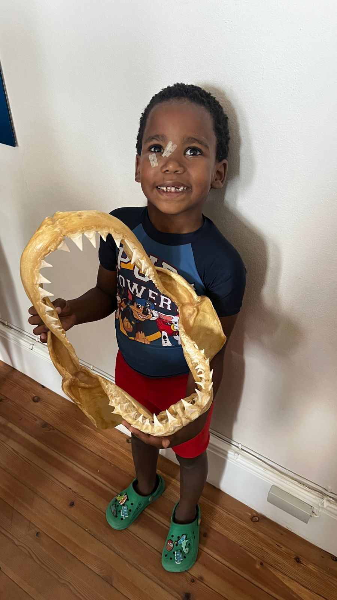

Our Story
The L.I.A.M. Foundation was founded in honour of Liam, and in love for his brother Jadyn — a reminder that every child’s life matters, every voice deserves protection, and healing is always possible.

Liam
Liam’s life continues to inspire compassion, advocacy, and a commitment to protecting children from harm and injustice.

Jadyn
Jadyn represents resilience, hope, and the future this foundation fights for — where children are supported, seen, and restored.